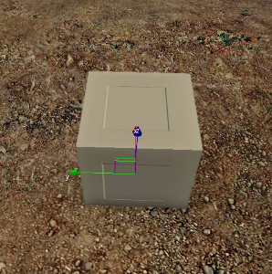
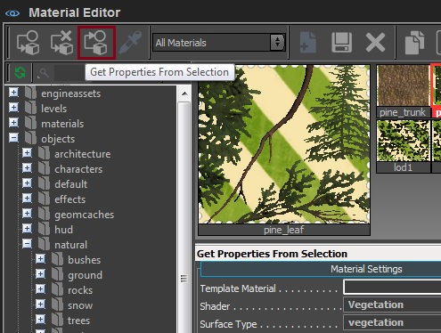
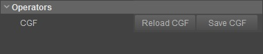

Обзор
Базовая геометрия (или static) используется в качестве различных объектов в среде, которым не присвоены какие-либо специальные свойства. Например, камень будет считаться геометрией static, потому что, вообще говоря, к нему не будет прикреплено никаких разрушаемых прокси или оснастки.
Общая настройка в инструментах DCC
3ds Max
Этот урок предполагает, что пользователи понимают основы 3ds Max, такие как пользовательский интерфейс и создание простой геометрии, и могут размещать объекты в редакторе Sandbox. Далее будет обсуждаться, как подготовить ваши ресурсы изнутри 3ds Max, чтобы поместить их в редактор Sandbox.
Maya
Этот урок предполагает, что пользователи понимают основы Maya, такие как пользовательский интерфейс и создание простой геометрии, и могут размещать объекты в редакторе Sandbox. Далее будет обсуждаться, как подготовить ваши ресурсы изнутри Maya, чтобы поместить их в редактор Sandbox.
FBX
Эта страница показывает, как импортировать ваш ресурс с помощью инструмента импорта FBX. Предполагается, что вы перешли на страницу 3dsMax или Maya, чтобы правильно настроить свой ресурс, и подробно описано, как импортировать этот ресурс в CRYENGINE через FBX вместо использования специальных средств экспорта.
Просмотр объекта в Sandbox
Старт Sandbox и загрузить существующий уровень. Нажмите кнопку Кисть кнопка в Создать объект инструмент и найдите объект.
Перетащите объект на уровень.

Получение и назначение материалов
Вы можете просмотреть материал объекта, открыв Material Editor (Инструменты -> Material Editor).
Нажмите кнопку Получить свойства из выбора на панели инструментов окна Material Editor. Это получает материал выбранного объекта:

Вы можете назначить объекту любой материал, выбрав материал (всегда выбирайте родительский, а не вложенный материал) и нажав самую левую кнопку на панели инструментов Material Editor (кнопка Назначение материала для выбора кнопка).
Примеры задач;
- При назначении одного материала SubID объекту с несколькими SubIDs первый ID будет назначен каждой поверхности, поскольку у него нет информации для других идентификаторов.
- Физический прокси ID может быть назначен другому ID, отличному от того, что указано в объекте.
- Различные макеты UV.
Лучший способ назначить или переопределить материал по умолчанию для объекта — внести изменения в тему при создании ресурса.
Примеры вариантов использования вариантов материала:
- Базовый актив — это камень с сухим на вид материалом.
- Создайте другой материал, специфичный для этого объекта, с влажным вариантом.
- Или другой, с растущим по бокам мхом.
- и т. д.
Поскольку вы создаете каменный объект, вносите изменения одновременно. Поскольку вы знаете структуру и расположение назначения SubID, все их варианты будут следовать одному и тому же соглашению (ID1 = прокси, ID2 = рок и т. д.) и будут находиться в правильном месте при назначении.
Тестирование объекта
Вы можете перейти в игру, нажав Ctrl+Г в окне просмотра «Перспектива» или из Игра меню.
Если вы нажали кнопку Физически Нажмите кнопку 3dsMax на прокси SubID материала (при условии, что вы создали прокси), любые другие персонажи/физизированные твердые тела будут сталкиваться с объектом.
Перезагрузка файла *.cgf на панели свойств. 
p_draw_helpers e_DebugDraw
Same as p_draw_helpers_num, but encoded in letters
Usage [Entity_Types]_[Helper_Types] - [t|s|r|R|l|i|g|a|y|e]_[g|c|b|l|t(#)]
Entity Types:
t - show terrain
s - show static entities
r - show sleeping rigid bodies
R - show active rigid bodies
l - show living entities
i - show independent entities
g - show triggers
a - show areas
y - show rays in RayWorldIntersection
e - show explosion occlusion maps
Helper Types
g - show geometry
c - show contact points
b - show bounding boxes
l - show tetrahedra lattices for breakable objects
j - show structural joints (will force translucency on the main geometry)
t(#) - show bounding volume trees up to the level #
f(#) - only show geometries with this bit flag set (multiple f's stack)
Example: p_draw_helpers larRis_g - show geometry for static, sleeping, active, independent entities and areas
Draw helpers with information for each object (same number negative hides the text)
1: Name of the used cgf, polycount, used LOD
2: Color coded polygon count
3: Show color coded LODs count, flashing color indicates no Lod
4: Display object texture memory usage
5: Display color coded number of render materials
6: Display ambient color
7: Display tri count, number of render materials, texture memory
8: RenderWorld statistics (with view cones)
9: RenderWorld statistics (with view cones without lights)
10: Render geometry with simple lines and triangles
11: Render occlusion geometry additionally
12: Render occlusion geometry without render geometry
13: Display occlusion amount (used during AO computations). Warning: can take a long time to calculate, depending on level size!
15: Display helpers
16: Display debug gun
17: Streaming info (buffer sizes)
18: Streaming info (required streaming speed)
19: Physics proxy triangle count
20: Display object instant texture memory usage
21: Display animated object distance to camera
22: Display object's current LOD vertex count